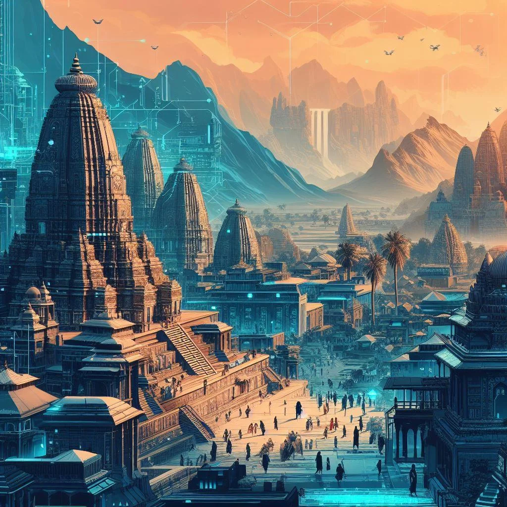
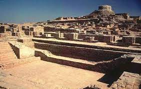
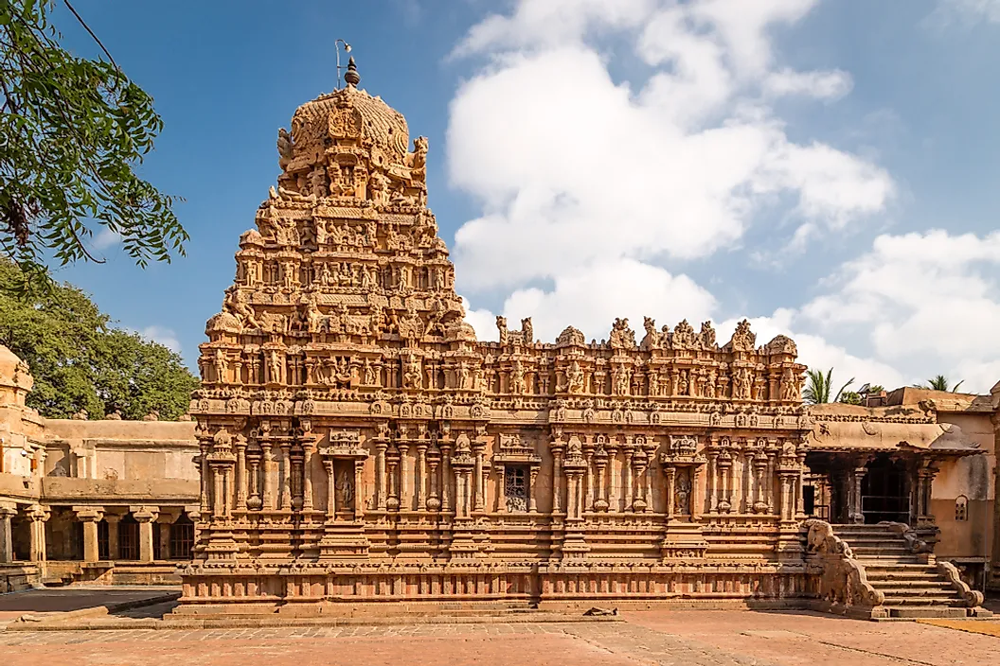

Indian Civilizatin: Ancient

Origins of the Indus Valley Civilization
The earliest evidence of humans in South Asia dates back two million years. Beginning about 30,000 years ago, stone age hunters and gatherers inhabited sites in the area. Between 8000 and 6500 B.C.E., there was a gradual shift from dependence on wild resources to domestic plants and animals.
During the period between 5000 and 2000 B.C.E., highly organized urban settlements spread throughout northern regions (present-day Pakistan and north India). Trade and communication networks linked these settlements to one another and to other distant ancient cultures.
Indus Valley Civilization and the Rise of Indo-Aryan Culture
Around 2600 B.C.E., regional cultures were united into a culturally integrated network in the Indus Valley region. Settlements in this civilization extended over a 650,000 square kilometer region. The peoples of the region shared a number of cultural characteristics, including planned urban developments, the use of a still undeciphered script, standardized weights, and craft technologies.
The Indus Valley cultural system declined in the early centuries of the second millennium B.C.E., probably due to environmental changes in the region. Around 1500, Indo-Aryan culture began to dominate the region. Indo-Aryan culture is associated with Sanskrit, a language related to Greek, Latin, and Avestan (the ancient language of Persia)--all are derivatives of a common mother language that is no longer extant (named by linguists as proto-Indo European). The Veda--texts associated with the complex ritual system of the Indo-Aryans--were composed in this period. These texts formed one important basis for the religion we now call "Hinduism."
Indus Valley Civilization and the Rise of Indo-Aryan Culture
Around 2600 B.C.E., regional cultures were united into a culturally integrated network in the Indus Valley region. Settlements in this civilization extended over a 650,000 square kilometer region. The peoples of the region shared a number of cultural characteristics, including planned urban developments, the use of a still undeciphered script, standardized weights, and craft technologies.
The Indus Valley cultural system declined in the early centuries of the second millennium B.C.E., probably due to environmental changes in the region. Around 1500, Indo-Aryan culture began to dominate the region. Indo-Aryan culture is associated with Sanskrit, a language related to Greek, Latin, and Avestan (the ancient language of Persia)--all are derivatives of a common mother language that is no longer extant (named by linguists as proto-Indo European). The Veda--texts associated with the complex ritual system of the Indo-Aryans--were composed in this period. These texts formed one important basis for the religion we now call "Hinduism."
The Early and Classical Per
At first largely nomadic, Indo Aryan culture became increasingly urbanized and settled. New religious orientations arose, and some of the notions associated with classical Hinduism and the other major religions of the period--such as samsara, or the notion of rebirth--developed. Buddhism and Jainism were founded in the middle of the last millennium B.C.E., sharing some of the basic assumptions of developing Hindu thought but critical of the hierarchical and ritual system associated with the Vedic system. Centralized power was first established on a broad scale under the Nanda dynasty in Magadha, and then expanded under the Mauryas from ca. 323-184 B.C.E.
In the first century C.E., the Kushans, a group of nomadic warriors from central Asia, conquered the Gandharan region of northern India, Pakistan, and Afghanistan. Smaller regional centers across the North, under Kushana control in the early centuries of the first millennium, were brought together under Gupta control in the fourth century. The Gupta period was characterized by great flourishing of art and literature, and is known as the "classical" period of Indian art and literature.

The "Medieval" Period
This period was characterized by the growth of strong regional centers and lack of one overarching political authority in the subcontinent. Sind in present-day Pakistan was integrated into a Muslim polity to the west; invasions by Turkic and Central Asian rulers commenced at the beginning of the second millennium C.E. Centralized powers were established, based at Delhi; independent regional kingdoms, however, continued. By the time Turkish invaders had established their power over the north as sultans, Rajput rulers in present-day Rajasthan and Punjab had established powerful small kingdoms. Regional kingdoms also flourished in the south.

british rule
Although Europeans were present in South Asia as traders from the beginning of the seventeenth century, it was not until the middle of the eighteenth century that the British established rule in the region. As Mughal control waned in the eighteenth century, British power expanded. After the Battle of Plassey in 1757, the British were ceded control of the province of Bengal. By 1857, the time of the First War of Indian Independence (or, as it was known to the British at the time, the "Mutiny"), the British were poised to take control from Mughal hands permanently. Nearly two-fifths of the area, however, was left in the hands of quasi-independent rulers, who nonetheless were forced to contend with British power at the center.
Persephone represents the cycle of death and rebirth. Persephone’s persona changes in tandem with the seasons. She takes on the role of a young, careless daughter when she visits her mother, similar to spring and summer when nature’s energy is light and vibrant. She shifts to the level-headed, wise yet fearsome Queen of the Underworld when she resides with her husband, mirroring winter when nature is calm and mature but is not to be underestimated for its powers.
THE END